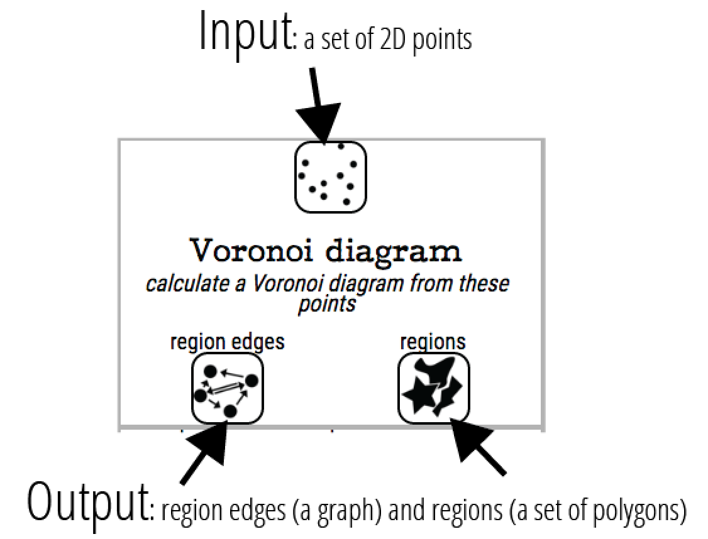
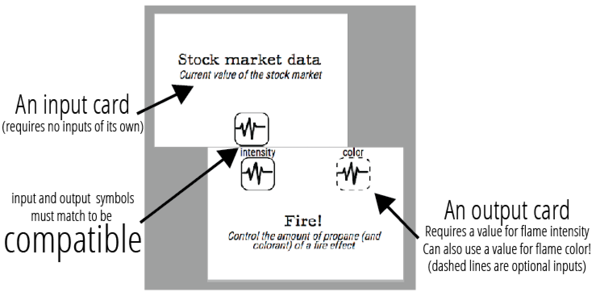
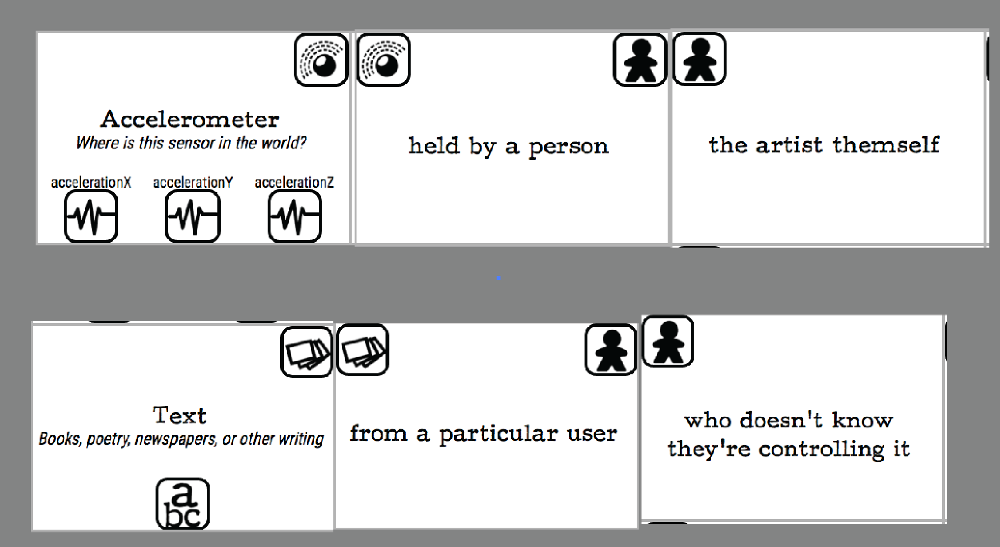
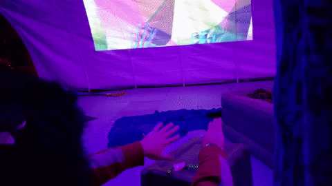
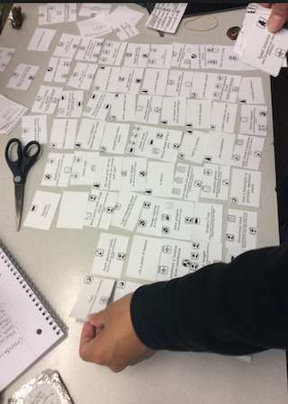
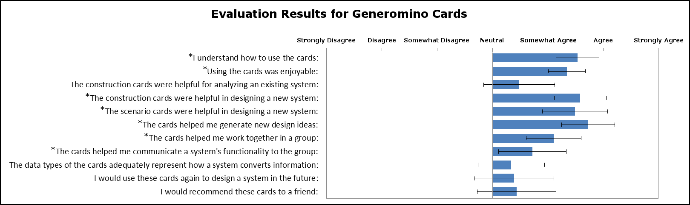

Generominos
A construction set for generative interactive artwork, by Kate Compton
What are the Generominos?
The Generominos are a physical instantiation of a new framework by Kate Compton for thinking about generative interactive art and games.
Generative methods often involve taking one kind of data and transforming it into another.
Interactive works often involve using novel interfaces to generate a feed of data, and also use interesting output devices to display some feed of data.
So a generative interactive system can be modeled as a pipeline of data streams:- Data streams are created by inputs
- The data undergoes a chain of transformations
- The resulting data streams are output somehow
...But data comes in many forms: numbers, text, vectors, graphs, and more!
Data streams can't magically convert from one type to another. But, many kinds of transformations are available as tools to turn one data-type into another. Sometimes these transformations even generate new interesting kinds of data themselves.
The Generominos cards are a constructive model of how pipelines transform the datastreams generated from inputs into the type of data needed by the outputs, though a series of compatible transformations. Like Dominos, each card has some sockets, only in this case, we can have several sockets for input (on the top), and several for output (on the bottom). Some cards may not have input sockets, others may not have output sockets. Here is an example card:
Each icon represents a different kind of data stream that might be created or used by this transformation. There are 17 kinds of data streams, and 3 specialty input types:
Using the Generominos to create a diagram
To create a diagram of a system, match the output symbols of a card to the input symbols of another card. Not all outputs need to be used (you can always ignore output), but all solid-lined inputs need to have a source (dashed lines are optional).
Here is a diagram of a system created by one of our playtesters, using the output of the stock market's value to control a fire effect. So as the stock market booms and busts, the intensity of the fire with change:
There are many Input cards, which don't need inputs of their own. Some of these have an icon on the top right side: this is the "user" icon. You can change who or what is controlling the input by matching these icons left-to-right, to create, for example:
"an accelerometer held by a person, who is the artist themself", or "existing text, from a particular user, who doens't know they're controlling the art with their text"
Example: Idle Hands
Idle Hands is an interactive generative art piece that I exhibited at the UnScruz outdoor art festival in 2017. It uses a Leap Motion to control a continuously-update Voronoi diagram, which is rendered and projected onto a screen.
The diagram of the system looks like this:

Because the LeapMotion creates a pipeline of several dozen continously updating points (the positions of the finger joints), I can easily turn that into the input of the Voronoi diagram, without losing any data. This creates a smooth and emergent feeling of interaction (without a lot of programming complexity) as seen from these videos

Using Generominos as a teaching tool
Eddie Melcer helped me test this as a teaching tool in his 2017 Alternative Controllers upper-division undergrad class at UC Santa Cruz. The images in the header are examples of systems that were diagramed by the students as part of this (IRB expempted) study.
The students found it helpful, as measured by their post-activity survey. But also, as instructors, we found their brainstormed projects from this activity to often be more interesting and creative than the ones they initially pitched in the class, so this seems to help improve out-of-the-box thinking for designing systems like these.
Want to use these as a brainstorming tool in your class? Print out your own copies, but also, let us know! I'd love to see more data on how these are used and how to improve them!

License

Generominos by Kate Compton is licensed under a Creative Commons Attribution-NonCommercial-ShareAlike 4.0 International License.
Based on a work at www.galaxykate.com/generominos.